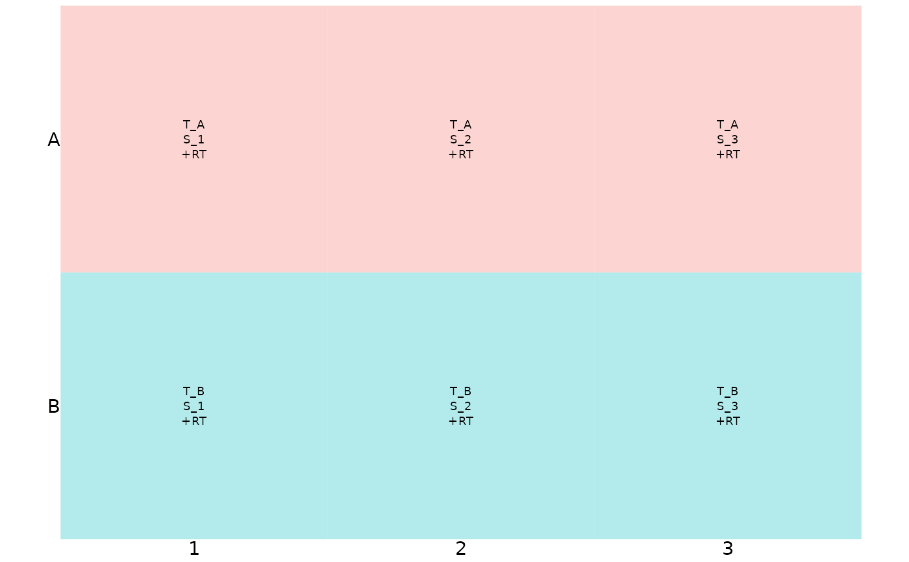
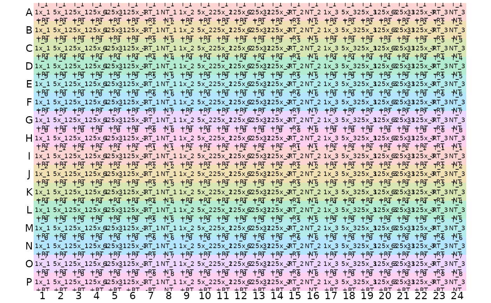

R/plate_functions.R
display_plate_qpcr.RdDisplay qPCR plate plan with sample_id, target_id, prep_type per well
display_plate_qpcr(plate)tibble with variables well_col, well_row, sample_id, target_id, prep_type. Output from label_plate_rowcol.
ggplot object; major output is to plot it
Other plate creation functions:
create_blank_plate(),
create_colkey_4diln_2ctrl_in_24(),
create_colkey_6_in_24(),
create_colkey_6diln_2ctrl_in_24(),
create_rowkey_4_in_16(),
create_rowkey_8_in_16_plain(),
display_plate_value(),
display_plate(),
label_plate_rowcol(),
make_row_names_echo1536(),
make_row_names_lc1536()
# create basic 6-well plate
basic_plate <-
label_plate_rowcol(plate = create_blank_plate(well_row = LETTERS[1:2],
well_col = 1:3),
rowkey = tibble(well_row = factor(LETTERS[1:2]),
target_id = c("T_A","T_B")),
colkey = tibble(well_col = factor(1:3),
sample_id = c("S_1","S_2", "S_3"),
prep_type = "+RT"))
# display basic plate
display_plate_qpcr(basic_plate)

# create full 384 well plate
full_plate <- label_plate_rowcol(create_blank_plate(),
create_rowkey_8_in_16_plain(target_id = c("T_1", "T_2",
"T_3", "T_4",
"T_5", "T_6",
"T_7", "T_8")),
create_colkey_6diln_2ctrl_in_24() %>%
dplyr::mutate(sample_id = paste0(dilution_nice,
"_",
tech_rep)))
# display full plate
display_plate_qpcr(full_plate)
